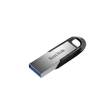

Contenedores
Al momento de retirar los tornillor de los distintos componentes de nuestros equipos es de mucha utilidad tener a nuestra dispocisión pequeños contenedores para poner estor tornillos para evitar que estos lleguen a perderse, estos pueden ser de tipo organizador o de maletin esto depende de la disponibilidad de este elemento, pero por lo general no son dificiles de conseguir por internet.
Pulseras antiestaticas
Estas pulseras antiestaticas son muy utiles y hasta llegan a ser necesarias para trabajar con componentes delicados como son los chips, procesadores o la misma placa madre de la computadora, esta se coloca en la muñeca y la otra punta de la pulsera se coloca en el chasis de la computadora esto hace que la energia estatica que puede que tengamos se direccione hacia el chasis como una coneccion a tierra a pequeña escala, esto sirve para que esta corriente no pueda causar daños en componentes delicados.
Instrumentos de limpieza de Polvo
El aire comprimido o mejor dicho las Latas de aire comprimido sonmuy utiles al momento de limpiar el polvo que se pudo aver acumulado entre las piezas del computador, el aire comprimido puede ser complementado por pequeños cepillos o brochas antiestaticas.
Instrumentos de soldadura
Los instrumentos que se utilizan para soldar los componentes son principalmente el cautin mismo que debe ser de preferecia de punta fina, la soldadura o estaño y en caso de ser necesario una estacion de soldadura puede llegar a ser bastante util.

Instrumentos de formateo
Estos instrumentos son dos una usb booteable de 8 Gb o más y un disco duro que se utiliza para hacer el respaldo de los datos de la computadora a formatear, para aprender como hacer una usb booteable te recomendamos visitar nuestro tutorial de como hacerlo siguiendo el siguiente enlace. --->
Como hacer booteble una usb

Multimetro
Este aparato nos es muy util al momento de trabajar con la fuente de poder pues este instrumento sirve para medir la corriente electrica en varias unidades de medida como voltios o amperios, su manejo es relativamente facil y es de mucha ayuda para determinar si un componente esta quemado o no esta emitiendo el voltaje adecuado.